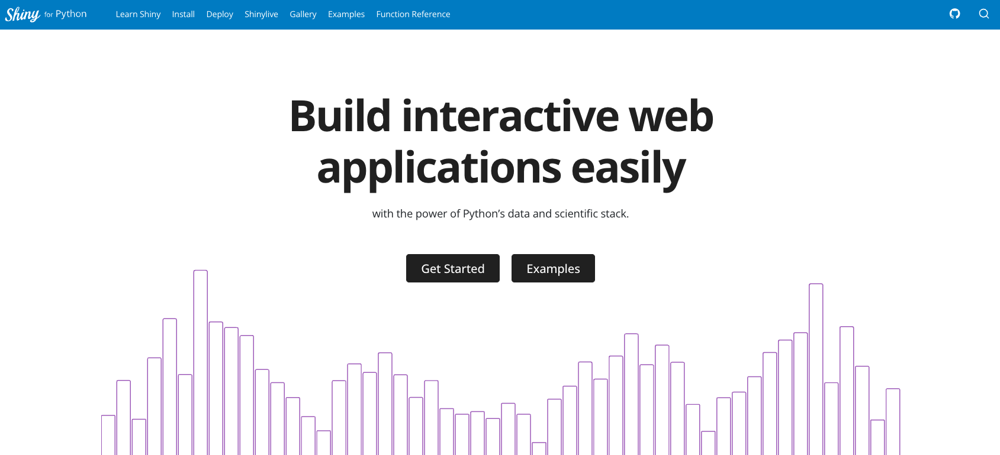
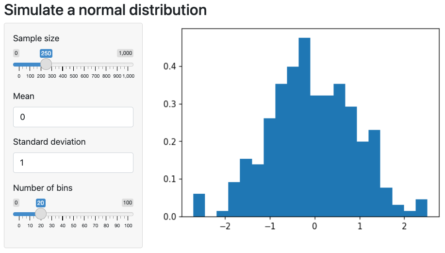
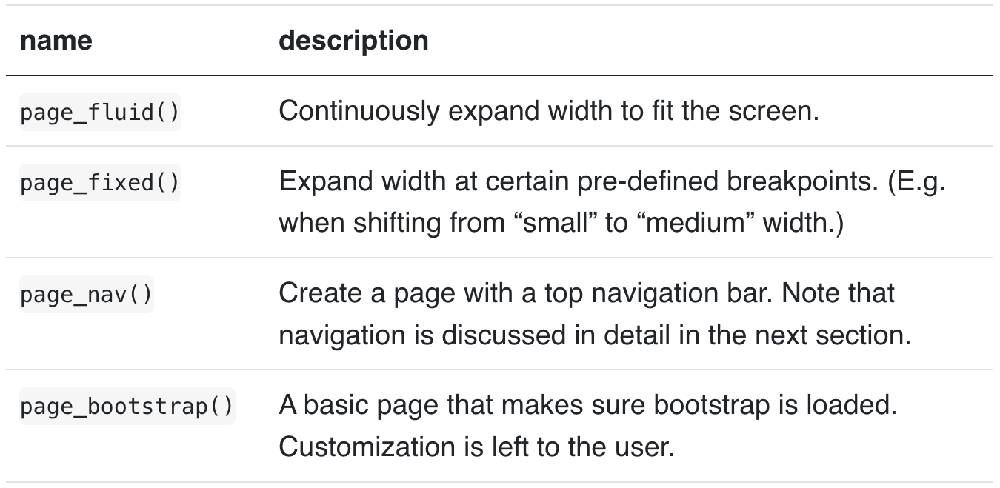
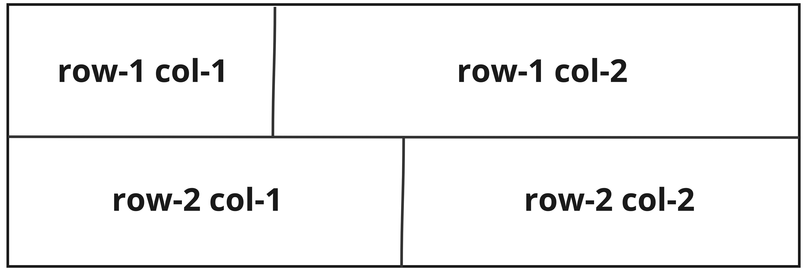
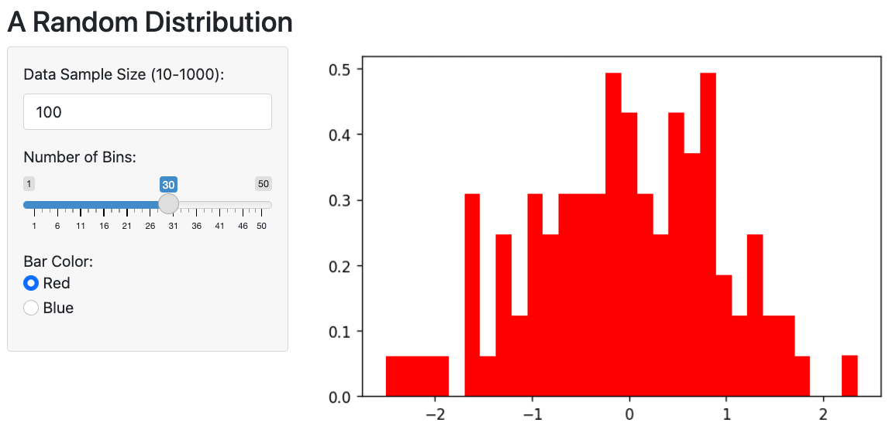

Shiny for Python


What is Shiny
Shiny makes it easy to build web applications. It enables you to customize the layout and style of your application and dynamically respond to events, such as a button press, or dropdown selection.
What is Shiny for Python?
What the last slide said…
…but for Python! 🐍

Let’s create a Shiny for Python app!
- No need to install anything!
- Run Shiny for Python in your browser using Shinylive
- Start here: a blank python session
Step 1 - Import Shiny
Step 2 - Add UI, Server, App
- Shiny applications consist of two parts: the user interface (or UI), and the server function. These are combined using a shiny.App object.
Step 3 - Add Slider
Step 4 - Add Server Logic
\[ n * 2 \]
Step 5 - Add Text Output
User Interface (UI) - Inputs
All input UI objects take the same first two string arguments:
id: an identifier used to refer to input’s value in the server code. For example,id="x1"corresponds withinput.x1()in the server function.label: a description for the input that will appear next to it.- Check out all the UI inputs here
- The next slides will show the most common UI objects
UI - Checkbox Inputs
UI - Numeric Inputs
UI - Text Inputs
UI - Selection Inputs
UI - Date Inputs
UI - Inputs
Click here to view a Shiny for Python app with a variety of inputs!
UI - Creating Outputs
- UI outputs create a spot on the webpage to put results from the server.
- All UI outputs require an
idargument, which corresponds to the server’s output ID.
UI - Creating Outputs
For example, if you create this UI output:
Then you could connect it to the server output using the code below:
UI - Outputs
Match the UI outputs IDs with the server output IDs.
03:00
Server Logic
In Shiny, the server logic is defined within a function which takes three arguments:
inputoutputsession
Server Logic
The server function is where you:
- Access and use
inputs - Define
outputs
Server Logic - Access Inputs
Input values are accessed via input.x(), where x is the id of the input.

Server Logic - Access Inputs
Comparing Shiny for Python to R
- Shiny for Python:
input.x() - Shiny for R:
input$x
Server Logic - Defining Outputs
Defining outputs is a three step process:
- Create a function with no parameters
Server Logic - Defining Outputs
Defining outputs is a three step process:
- Create a function with no parameters
- Apply a
@outputand@renderdecorator
Server Logic - Defining Outputs
Defining outputs is a three step process:
- Create a function with no parameters
- Apply a
@outputand@renderdecorator
- Add logic
Putting it together!
05:00
A quick primer on reactivity
What if my Shiny app does more than just: \[ n * 2 \]
A quick primer on reactivity
Create a separate reactive function!
A quick primer on reactivity
- Add a
reactive.Calcthat does something to the valuen - add the
reactive.Calcfunction to the output
03:00
A quick primer on reactivity
Comparing Shiny for Python to R
- Shiny for R:
shiny::reactive() - Shiny for Python:
reactive.Calc
- Shiny for R:
shiny::observe() - Shiny for Python:
reactive.Effect
More info here on Shiny for Python reactivity
Layout and Style
Common layout for shiny apps - fluid page with sidebar layout
Layout and Style - Page with Sidebar
Run app here
Layout and Style - Other Page Functions
Layout and Style - Rows and Columns

Layout and Style - Tabs and Navigation
Allows you to create apps with multiple pages
ui.navset_xxx: wherexxxcan betab,tab_card,pill,pill_card, orpill_listReplace
xxxin this app to see tab/navigation choices.
02:00
Layout and Style - Other Navigation Elements
External links: Create a tab to an external link using
ui.nav_control()Menus: Create a dropdown menu on the navbar with
ui.nav_menu()
Example app here
Wrap Up
We only just scratched the surface 😬!
…but you can learn more here!
Final Project

10:00
Sharing your Shiny for Python Apps
Shinylive: for simple applications with minimal package dependencies
shinyapps.io: hosted service for deploying shiny for python apps
Posit Connect: Requires v2022.07+
Deploying to Posit Connect
- Install
rsconnect-pythonpackage - Register you Connect server/account
- Create a
requirements.txtfile - Deploy!